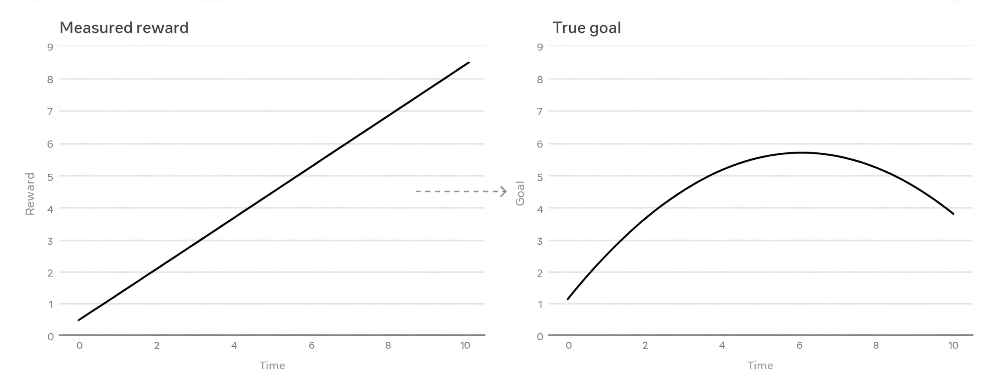

Research-Engineer CurriculumNo. 34 of 39 · Sept 2026 edition
Evals and Safety Engineering: The Crash Pack
One volume. Zero fluff. Everything in this pack is either a decision you will make on the job, a number you must be able to recall cold, or a trap that has burned real teams. It compresses Role Track 5 (eval suite architecture, autorater science, red-teaming, mitigations, measurement, incident response) plus the statistics appendix on non-deterministic evals (11A), the labeler-protocol appendix (11B), and the agent-evals appendix (9A).
How to run this pack
Three passes, about six hours total.
- Pass 1 (90 min): Read sections 1 and 2. The decision rules and the numbers are the skeleton. Everything else hangs off them.
- Pass 2 (3 hours): Read section 3, then do every Q&A in section 4 with the answer hidden. Speak the answer out loud before you reveal it. If you cannot say it, you do not know it.
- Pass 3 (90 min): Memorize the cheat sheet in section 5. Test yourself the next morning with a blank page.
This pack teaches judgment, not recipes. The thresholds here (sample sizes, kappa bars, gate limits) are starting points tuned on practitioner experience. Your team's real numbers come from your own calibration data. Never ship a threshold you did not earn.
1. Decision rules
Twelve rules. If you remember nothing else, remember these.
Rule 1. Split the suite into three tiers, and never merge them
- Tier 1, smoke: about 50 tasks, runs in minutes, on every commit. Job: catch obvious breakage fast. A smoke failure blocks the merge, not the release.
- Tier 2, gate: 500 to 2,000 tasks, runs in hours, on every release candidate. Job: the ship-or-hold decision. Thresholds are written down and versioned.
- Tier 3, science: open-ended, runs for days, on demand. Job: answer research questions ("did the new data mix change refusal quality?"). It lives outside the gate so slow questions never block shipping.
The common failure is one giant suite trying to do all three jobs. It is too slow for commits, too noisy for gating, and too rigid for research. Split the tiers and each one gets simpler.
+-----------------------------+
| TIER 1: SMOKE |
| ~50 tasks · minutes |
| every commit · blocks merge |
+--------------+--------------+
|
+--------------v--------------+
| TIER 2: GATE |
| 500-2000 tasks · hours |
| release candidates · blocks |
| SHIP |
+--------------+--------------+
|
+--------------v--------------+
| TIER 3: SCIENCE |
| open-ended · days |
| on demand · never blocks |
+-----------------------------+
How to read this diagram
- Time flows downward; strictness flows upward. The cheapest tier runs most often.
- Smoke blocks the merge, not the release: it answers "is this obviously broken," not "is this shippable."
- Only Tier 2 carries a ship-or-hold verdict. If Tier 3 questions block shipping, someone merged the tiers and the suite will get routed around.
Rule 2. Climb the grader ladder: checkable first, judgment last
Pick the cheapest grader that is honest for the task.
Grader ladder: cheapest honest grader first.
+-----------------------------+
| deterministic string check | checkable answers only; normalize case and whitespace
+--------------+--------------+
v
+-----------------------------+
| human rubric grading | two humans per item; the entry ticket
+--------------+--------------+
v
+-----------------------------+
| autorater (LLM judge) | only after it clears calibration (Rule 4)
+-----------------------------+
Rule: keep human-graded tasks in the gate tier permanently.
A gate with zero human eyes is a gate nobody trusts when it matters.- Checkable answer? Use a deterministic string check (normalize case and whitespace first; raw substring matching fails silently on formatting).
- Open-ended? Write a rubric, then grade with humans first. Two humans per item is the entry ticket.
- Scale needed? Add an autorater only after it clears calibration (Rule 4). Keep some human-graded tasks in the gate tier permanently. A gate with zero human eyes is a gate nobody trusts when it matters.
A rubric that two humans cannot apply consistently is not a rubric. Fix it before any autorater sees it.
Rule 3. Never trust a judge you have not licensed
An LLM judge is a measurement instrument. License it like one:

- Build a calibration set of 20 to 50 items spanning the full quality range. Deliberately include known-bad and known-borderline cases.
- Humans label first, 2 to 3 raters per item. If humans disagree, the rubric is broken. Fix the rubric.
- Run the judge on the same items. Compute Cohen's kappa (agreement corrected for chance; 2.1 works the formula), not raw agreement.
- Read the disagreements. Sort by gap size, read the top 10, and ask for each: did the judge miss, did the human miss, or is the rubric ambiguous? The answer is almost always the rubric.
- Revise the rubric, not the judge. Editing the judge prompt to chase individual disagreements is overfitting with extra steps.
- Re-run on a fresh sample. Never re-tune on the same golden set twice without a fresh holdout.
The bar: judge-vs-human kappa near the human-vs-human ceiling (about 0.8 on many real tasks). A judge far below the ceiling is not a human substitute.
Rule 4. Calibrate on a schedule, and after every big change
A calibrated judge goes stale. Re-calibrate on a calendar schedule, and re-calibrate immediately after any big model change. Between calibrations, keep the judge on a dashboard with three panels: agreement with humans on a rolling sample (re-grade 50 items a month), score distribution over time (a sudden shift means something changed), and monthly disagreement review. When kappa drops below your bar, the judge goes back through the calibration loop. A judge that is not monitored is a judge you are not using.
Rule 5. Red-team in adversary order, goal by goal
Test against the three adversary profiles in order: the curious user first, then the motivated amateur, then the skilled adversary. If the curious user breaks your model, you do not have a skilled-adversary problem. You have a basics problem.
Cover all four attacker goals with separate probe sets, because a model can be strong against one and weak against another: refusal bypasses, prompt extraction, injection (instructions hidden in tool output or pasted content), misuse enablement.
Cover all six attack families for every high-risk goal: direct requests, roleplay and persona, encoding and translation, multi-turn buildup, instruction smuggling, automated search (static libraries and adaptive orchestrators). If a direct request works, stop. Fix the basics before you hunt for clever attacks.
Rule 6. Report red-team results per family, and treat the library as living
One number ("12% of probes broke it") tells you nothing. Report break rates per attack family: the family view shows which kinds of attacks are weak. When a new jailbreak technique appears in public, add it to the library as a new probe. A finding is reproducible or it is not a finding: every reported break ships with the exact prompts, model version, and settings that reproduce it.
Rule 7. Stack mitigations in order, and ask each layer what it misses
Read bottom to top. Each layer catches what the layer below missed.
USER
|
v
+--------------------------------------------------+
| 5. MONITORING ..... log, sample, alert on |
| production traffic; catch what shipped anyway |
+--------------------------------------------------+
| 4. OUTPUT FILTER .. classifier on the response |
| before it reaches the user |
+--------------------------------------------------+
| 3. THE MODEL ...... refusal training, values, |
| instruction hierarchy from post-training |
+--------------------------------------------------+
| 2. INPUT FILTER ... classifier on the prompt |
| before it reaches the model |
+--------------------------------------------------+
| 1. SYSTEM PROMPT .. hardened instructions, |
| least privilege, secret minimization |
+--------------------------------------------------+
For each layer ask two questions: what does this layer catch that the others miss, and what sails straight through it? System-prompt hardening is cheap and fast to deploy, and weaker than training. Use it as a layer, never as the plan. A filter with unknown precision and recall is not a mitigation; it is a hope.
Rule 8. Gate on deltas against the baseline, not on absolute scores
A 92% that used to be 95% ships under an absolute bar. Deltas catch decay. Every release diffs the candidate against the released baseline on the same suite, same seeds. The gate policy is versioned code, not a number in someone's head:
- max smoke regressions: 0. Any smoke regression holds.
- max probe break rate: 10% in any attack family.
- judge kappa below 0.6: warn. The gate flags; a human confirms before a HOLD becomes final, because automated scoring has false positives.
- Human confirms every HOLD. The gate proposes; a person disposes.
The sign-off reads: "Model v3.2 passes the gate suite at thresholds T, with N known exceptions listed below." Known exceptions, listed, with owners and dates. That sentence separates engineering from theater.
Rule 9. Set filter thresholds per category, by risk
Every filter lives on a precision-recall tradeoff (precision: of the flagged items, how many were really bad; recall: of the really bad items, how many the filter caught), and the threshold is a product decision, not a math fact. Set it strict for self-harm and weapons content, more balanced for spam. Then measure the filter like any component: precision and recall on a labeled set, latency added to the serving path, and the false-positive rate on real traffic. Filters need adversarial testing of their own: paraphrase, obfuscation, and splitting content across messages are the standard evasions.
Rule 10. When the public suite and the private set disagree, believe the private set
Contamination defense in five moves: version every eval like code; keep a changelog (when a task is added, removed, or reworded, log why); keep eval sets private; rotate items and retire saturated tasks; hold out a private slice that nobody trains against and nobody tunes prompts against. Watch for suspicious jumps on static sets. A suite where everything scores 99% measures nothing.
Rule 11. Report capability and safety side by side, always
Safety costs capability. A model that refuses more also refuses some benign requests. A strict output filter blocks some good traffic. This is the shape of the problem, not a flaw in your mitigations. The honest picture is a Pareto frontier: the best safety at each level of capability. Pick a point on it deliberately and say which point you picked. The unit of honest safety engineering is one sentence: "Refusal tuning cut harmful compliance from 4% to 0.5% and cost 1.2 points on benign task completion."
capability ^
100 | X ideal (does not exist)
|
90 | X current model
| . - the frontier: best
80 | . known tradeoffs
|.
70 | X over-mitigated:
| safe but useless
60 +--------------------------------
60 70 80 90 100 safety
How to read this diagram
- The top-right corner (perfect at both) does not exist. Every real model is a point on or below the curve.
- Moving right (safer) usually moves the point down (less capable). The curve is the set of best-known tradeoffs.
- A release moves the point. Your job is to say where it moved and what it cost, with both numbers side by side.
Rule 12. Every incident ends in the eval suite
Triage with a severity scale written for model behavior: S1 is active, ongoing harm at scale (page now); S2 is serious but bounded (same-day response, mitigation within the week); S3 is concerning but rare (normal cycle); S4 is a paper cut (log it).
The first hour has a checklist: reproduce the behavior and record exact prompts, model version, and settings; assess blast radius and check whether it is being shared publicly; decide hold vs rollback; open the incident record; assign one owner.
Write rollback criteria before the incident, in the units you already measure, and rehearse the rollback path. A rollback you have never rehearsed is a plan you do not have. Record near-misses: an S2 that almost became an S1 is free information about where your criteria are thin.
Postmortems are blameless and ask five questions in order: what happened (timeline of facts), what was the impact (numbers), why did it happen (five whys), what did we learn about our process, what changes now (action items with owners and dates). The most important rule: the incident's reproduction prompts become regression tasks in the suite, the missing probe family gets built, the metric that should have caught it gets a threshold. An incident that does not change the eval suite will happen again.
2. Numbers and formulas to memorize
Every snippet below was executed. The printed outputs are real.
2.1 Cohen's kappa: the agreement number that does not flatter
kappa = (p_o - p_e) / (1 - p_e), where p_o is observed agreement and p_e is the agreement expected from the two raters' individual yes-rates by chance.
Landis and Koch bands: below 0 is worse than chance; 0.00-0.20 slight; 0.21-0.40 fair; 0.41-0.60 moderate; 0.61-0.80 substantial; 0.81-1.00 almost perfect.
def cohen_kappa(a, b, c, d):
# Confusion matrix, judge rows vs human columns:
# a = both say yes b = judge yes, human no
# c = judge no, human yes d = both say no
# Using the matrix is the whole point: kappa corrects for the agreement
# the two yes-rates would produce by luck. Raw percent agreement skips
# that correction and flatters lazy judges.
n = a + b + c + d
if n == 0:
raise ValueError("empty confusion matrix: nothing to compare")
p_o = (a + d) / n # Observed agreement: the diagonal over total.
p_yes_judge = (a + b) / n # Judge's individual yes-rate.
p_yes_human = (a + c) / n # Human's individual yes-rate.
# Chance agreement: yes-yes by luck plus no-no by luck.
p_e = p_yes_judge * p_yes_human + (1 - p_yes_judge) * (1 - p_yes_human)
if p_e == 1.0:
return 1.0 # Degenerate: both raters said the same thing every time.
return (p_o - p_e) / (1 - p_e)
def kappa_band(k):
# Band edges are the published Landis-Koch cutoffs.
if k < 0.0: return "worse than chance"
if k <= 0.20: return "slight"
if k <= 0.40: return "fair"
if k <= 0.60: return "moderate"
if k <= 0.80: return "substantial"
return "almost perfect"
# Worked example: judge passes 70, human passes 75, they agree on 75 of 100.
k = cohen_kappa(60, 10, 15, 15)
print(f"kappa = {k:.3f}") # kappa = 0.375
print("band:", kappa_band(k)) # band: fair
# The lazy-judge check: always says pass. Raw agreement looks fine.
k2 = cohen_kappa(70, 0, 30, 0)
print(f"lazy judge kappa = {k2:.3f}") # lazy judge kappa = 0.000
How to read this diagram
- The function takes the four cells of the confusion matrix (the 2x2 table: human-yes/judge-yes, human-yes/judge-no, human-no/judge-yes, human-no/judge-no). Those four numbers carry both the agreement and each rater's individual yes-rate.
- p_o is plain observed agreement. p_e is the chance term raw agreement pretends does not exist: a judge that says yes 70% of the time and a human that says yes 75% agree on "yes" 52.5% of the time even guessing.
- The worked example prints 0.375: raw agreement said 75%, kappa says "fair." The 37.5-point gap is chance agreement the raw number hid.
- The lazy judge gets kappa exactly 0.0. Kappa exposes what raw agreement rewards.
Memorize: raw agreement flatters; kappa corrects. The human ceiling is about kappa 0.8 on many real tasks (Rule 3's bar), so judge-vs-human against a perfect 1.0 is an unfair bar. Report both numbers side by side.
2.2 Wilson interval: honest error bars for small, lopsided samples
For a yes/no rate with n trials and z = 1.96 (95%):

center = (p + z^2 / 2n) / (1 + z^2 / n), half-width = z * sqrt(p(1-p)/n + z^2/4n^2) / (1 + z^2 / n), interval = [center - half, center + half].
Use Wilson instead of the bootstrap (resampling your data with replacement to estimate uncertainty) when the sample is small and lopsided, for example 20 hits out of 20 tries, where a plain bootstrap would claim a confidence interval of [1, 1], which is certainty you do not have.
def wilson_interval(hits, n, z=1.96):
# Wilson score interval for a yes/no rate. The z^2/n terms shrink the
# estimate toward 0.5 when n is small: that shrinkage IS the honesty.
# z=1.96 gives the 95% interval under the normal approximation.
if n == 0:
return 0.0, 0.0 # No data: the honest answer is "unknown", not zero.
p = hits / n
denom = 1 + z * z / n
center = (p + z * z / (2 * n)) / denom
half = z * (p * (1 - p) / n + z * z / (4 * n * n)) ** 0.5 / denom
return center - half, center + half
lo, hi = wilson_interval(20, 20)
print(f"20/20 -> 95% CI [{lo:.3f}, {hi:.3f}]") # [0.839, 1.000]
lo, hi = wilson_interval(47, 50)
print(f"47/50 -> 95% CI [{lo:.3f}, {hi:.3f}]") # [0.838, 0.979]
Memorize: 20 out of 20 is not 100%. It is [0.839, 1.000] at 95%. Any report that writes "100% (n=20)" without the interval is hiding uncertainty.
2.3 Paired bootstrap: the standard A/B design for LLM outputs
Three layers of noise, three fixes: pair the systems on the same items (kills item noise), repeat each case 3 to 5 times and average (kills decoding noise), calibrate the judge first (kills judge noise). Then bootstrap the per-item differences.
import random
def paired_bootstrap_ci(diffs, n_resamples=10000, alpha=0.05, seed=0):
# diffs: one number per item, B's score minus A's score on the SAME item.
# Pairing subtracts "this question was easy" before statistics run.
rng = random.Random(seed) # Fixed seed: the analysis itself is repeatable.
n = len(diffs)
mean = sum(diffs) / n # Point estimate: average gap, B over A.
# Resample the differences with replacement 10k times. Each resample is
# a fake experiment "like this one"; the spread of fake means estimates
# how much the real mean could wobble.
resampled_means = []
for _ in range(n_resamples):
sample = [rng.choice(diffs) for _ in range(n)] # n draws, replacement
resampled_means.append(sum(sample) / n)
resampled_means.sort()
# Percentile interval: chop alpha/2 off each tail of the sorted means.
lo = resampled_means[int((alpha / 2) * n_resamples)]
hi = resampled_means[int((1 - alpha / 2) * n_resamples)]
return mean, lo, hi
random.seed(7) # Demo data stand-in; real diffs come from your judge.
demo_diffs = [random.gauss(0.33, 1.1) for _ in range(60)]
mean, lo, hi = paired_bootstrap_ci(demo_diffs)
print(f"mean gap = {mean:.2f}, 95% CI = [{lo:.2f}, {hi:.2f}]")
# mean gap = 0.29, 95% CI = [0.05, 0.53]
Reading it: zero is outside the interval, so the gap is significant at the 5% level. But the interval's width says the true gap could be as small as 0.05. Significance says the gap is real; the interval says whether it is big enough to care about. Most teams forget the second sentence.
2.4 Majority vote: the binomial arithmetic of labeler pools
If each labeler is right with probability p independently, the majority of n (odd) labelers is right with probability P = sum over k of C(n,k) p^k (1-p)^(n-k) for k from majority threshold to n. "Independently" is the load-bearing assumption: labelers must work blind to each other.
import math
def majority_vote_accuracy(p, n=3):
# P(majority right) = P(at least (n+1)/2 labelers right), binomial sum.
# Blind labeling is what keeps the independence assumption honest: if
# all three share one misunderstanding, they agree confidently and wrongly.
if n % 2 == 0:
raise ValueError("majority vote needs an odd number of labelers")
needed = n // 2 + 1 # 2 of 3, 3 of 5, and so on.
return sum(math.comb(n, k) * p**k * (1 - p)**(n - k)
for k in range(needed, n + 1))
print(f"3 labelers at 75%: {majority_vote_accuracy(0.75, 3):.3f}") # 0.844
print(f"5 labelers at 75%: {majority_vote_accuracy(0.75, 5):.3f}") # 0.896
print(f"3 labelers at 60%: {majority_vote_accuracy(0.60, 3):.3f}") # 0.648
Memorize: 3 x 75% votes to 84.4%. Going 3 to 5 buys only 5 more points: diminishing returns. And 3 x 60% only reaches 64.8%: majority vote amplifies a decent signal; it does not rescue a weak one. Qualify labelers first.
2.5 pass@k, pass@1, pass^k: ceiling, typical, reliability
pass@k = 1 - C(n-c, k) / C(n, k): if the agent gets k independent tries, the chance at least one succeeds. It measures the ceiling. pass@1 = c/n is the plain success rate: typical performance. pass^k = C(c, k) / C(n, k): the chance all k tries succeed. It measures reliability, the number production usually cares about.
import math
def pass_at_k(n, c, k):
# Unbiased pass@k: 1 minus the chance all k draws miss the c successes.
# Comb(n-c, k) counts the all-miss draws; comb(n, k) counts all draws.
if k > n:
return 1.0 # More tries than samples: ceiling is certain by fiat.
return 1 - math.comb(n - c, k) / math.comb(n, k)
def pass_pow_k(n, c, k):
# Unbiased pass^k: the chance all k draws land on successes.
if k > c:
return 0.0 # Cannot draw k successes from fewer than k.
return math.comb(c, k) / math.comb(n, k)
n, c = 10, 3 # Agent succeeds 3 times in 10 tries.
print(f"pass@1 = {c/n:.2f}") # 0.30 typical
print(f"pass@5 = {pass_at_k(n,c,5):.4f}") # 0.9167 ceiling
print(f"pass^2 = {pass_pow_k(n,c,2):.4f}") # 0.0667 reliability
Memorize: report the pair, with n stated. "pass@5 = 0.92, pass@1 = 0.30, n = 10" tells the full story. "92% success" tells a lie. An agent with high pass@k and low pass^k is brilliant sometimes and flaky usually.
2.6 The gate verdict, as code
def gate_verdict(smoke_regressions, worst_family_break_rate, judge_kappa=None,
max_smoke_regressions=0, max_break_rate=0.10, min_kappa=0.60):
# SHIP only if every bar clears. One thing is deliberately NOT code:
# an automated HOLD is a flag; a human confirms it before it is final.
reasons = []
if smoke_regressions > max_smoke_regressions:
reasons.append(f"{smoke_regressions} smoke regression(s); "
f"policy allows {max_smoke_regressions}")
if worst_family_break_rate > max_break_rate:
reasons.append(f"worst family break rate {worst_family_break_rate:.0%}; "
f"policy allows {max_break_rate:.0%}")
if judge_kappa is not None and judge_kappa < min_kappa:
reasons.append(f"judge kappa {judge_kappa:.2f} below warning bar {min_kappa}")
if not reasons:
return "SHIP", "all bars clear"
return "HOLD", "; ".join(reasons)
v, r = gate_verdict(1, 1.00, 0.72)
print(v, "--", r) # HOLD -- 1 smoke regression(s); policy allows 0; ...
v, r = gate_verdict(0, 0.04, 0.72)
print(v, "--", r) # SHIP -- all bars clear
v, r = gate_verdict(0, 0.04, 0.51)
print(v, "--", r) # HOLD -- judge kappa 0.51 below warning bar 0.6
The third case is the subtle one: the model is fine, the judge drifted. A gate that cannot distinguish "model regressed" from "instrument drifted" will block good releases and erode trust in the suite.
2.7 The constant sheet
| Quantity | Value | Unit / meaning |
|---|---|---|
| Kappa bands (Landis-Koch) | <0, 0.00-0.20, 0.21-0.40, 0.41-0.60, 0.61-0.80, 0.81-1.00 | worse than chance, slight, fair, moderate, substantial, almost perfect |
| Human-vs-human ceiling | ~0.8 | kappa; the bar a judge is measured against, not 1.0 |
| Judge ship bar | >= 0.7 | kappa; practitioner rule of thumb, tune per team |
| Gate judge warning | < 0.6 | kappa; flag and human-confirm |
| Wilson z for 95% | 1.96 | standard normal quantile |
| 20/20 correct, 95% CI | [0.839, 1.000] | Wilson; "100%" is a lie at n=20 |
| Min cases per variant | 30 | items; Central Limit Theorem kicking in, rule of thumb |
| Repeats per case | 3-5 | runs; averages out decoding noise |
| Calibration set | 20-50 | items spanning the full quality range |
| Gold-item qual batch | 30-50 | items, 80% bar to pass |
| Gold seeding in production | ~5% | of every batch, invisible, catches drift |
| Labelers per preference item | 2-3 | independent, blind to each other |
| Split-verdict rate | ~30% | of preference pairs in practice |
| Human agreement baseline | ~70% | preference labels; the ceiling is below 100% |
| Judge re-grade cadence | 50/month | items on the monitoring dashboard |
| Majority 3x75% | 84.4% | binomial; 5x75% is 89.6%, 3x60% is 64.8% |
| Smoke tier | ~50 tasks, minutes | every commit; blocks the merge |
| Gate tier | 500-2000 tasks, hours | every release candidate; blocks SHIP |
| Max smoke regressions | 0 | any regression holds |
| Max probe break rate | 10% | per attack family |
| Bonferroni with 20 metrics | alpha = 0.0025 | 0.05 / 20; divide the bar by test count |
| Severity S1 | page now | active harm at scale |
| Severity S2 | same-day | serious but bounded; fix within the week |
| Incident clock | hour 0, 1, 2; day 1; week 1; week 2+ | detect, reproduce, assess; mitigate; postmortem; harden |
3. Classic traps
Each trap names why it fools you and the one move that beats it.
Trap 1. Position bias in autoraters
The judge favors whichever response is listed first (or second; it varies by model). It fools you because the scores look decisive and repeatable. The move: run every pairwise comparison in both orders and require the verdict to be stable. If flipping the order flips the verdict, the judge is not judging.
Trap 2. Verbosity bias
Judges reward longer answers even when length adds nothing, the same way rushed humans use length as a proxy for quality. It fools you because longer answers often are more thorough, so the bias hides inside a real signal. The move: pad a weak answer with filler and check whether its score rises. If it does, add "brevity is not penalized; filler is not rewarded" to the judge prompt and re-calibrate, then add long-but-wrong examples to the calibration set.
Trap 3. Self-preference
A judge built from model X favors outputs written in X's style. It fools you because the judge's reasoning sounds thoughtful while it quietly prefers its own family. The move: have the judge score outputs from several models and check whether its own family wins suspiciously often. Never let a model grade a release candidate of itself without a human check.
Trap 4. Style and formatting bias
Judges reward confident tone, bullet lists, and polished formatting over correct content. It fools you because the preferred answer looks better. The move: pit a correct plain answer against an incorrect polished one. The judge must prefer the correct one. This is the most common silent failure in production judges.
Trap 5. Raw agreement flatters lazy judges
A judge that always says "pass" on a task where 90% of outputs pass gets 90% agreement and kappa near zero. It fools you because 90% looks like an A. The move: always report kappa next to agreement. The lazy-judge check from section 2.1 (kappa exactly 0.0) belongs in every calibration report.
Trap 6. Goodhart on benchmarks
When a measure becomes a target, it stops being a good measure. It fools you because the number keeps going up while the thing it stood for stops improving. Reward hacking is Goodhart with a training loop. The move: version evals like code, keep a changelog, rotate saturated tasks, and hold out a private set nobody trains or tunes against.

Trap 7. Eval-data contamination
If eval tasks leak into training data, the score measures memorization. It fools you because the jump looks like a capability gain and everyone wants to believe it. The move: keep eval sets private, rotate items, and watch for suspicious jumps on static sets. When the public suite and the private set disagree, believe the private set.
Trap 8. Confusing pass@1 with reliability
"81% success" on a pass@5 of 0.81 with a pass@1 of 0.34 describes a ceiling, not a typical run. It fools you because one percentage point is easier to quote than three. The move: always report the pair, ceiling and typical, with n stated. For production decisions, look at pass^k: the chance all k tries succeed is the number that predicts user experience.
Trap 9. Gating on absolute scores instead of deltas
A 92% that used to be 95% ships under an absolute bar. It fools you because 92% clears the bar on paper. The move: gate on the delta against the released baseline, same suite, same seeds. Deltas catch decay that absolutes bless.
Trap 10. Multiple comparisons without correction
Test 20 metrics at the 5% level and one will look significant by luck. It fools you because the "winning" metric comes with a real p-value attached. The move: divide the bar by the number of tests (Bonferroni: 0.05/20 = 0.0025). Deliberately strict, deliberately cheap.
Trap 11. Tuning against the set you report on
Tuning the prompt against the same 60 questions you report on measures memory of the tuning process, not quality. Judge shopping (trying judges until one agrees) and cluster structure (resampling ratings that share a prompt and judge as if independent, which narrows intervals artificially) are the same family. The move: keep a hold-out set you never look at until the final number; when ratings are hierarchical, resample by prompt (cluster bootstrap), not by rating.
Trap 12. Over-refusal: safe the way a brick is safe
A model that refuses benign requests is safe and useless. It fools you because the harmful-compliance number looks great while the capability cost hides. Worse, preachy refusals train users to jailbreak out of annoyance: a perverse incentive you built yourself. The move: measure refusal on three axes, coverage (refuse across all must-refuse goals), calibration (refuse what it should, comply with what it may), and style (short, non-preachy, offer a safe alternative when one exists). Use benign edge prompts near the refusal boundary, and report the capability cost in the same sentence as the safety gain.
4. Rapid-fire Q&A
Twenty-eight questions. Answer each out loud before revealing.
Q1. Name the four parts of an eval suite, and say which two most teams improvise.
Tasks (prompts plus context), graders (code or rubrics that score), the harness (runs tasks, calls the model, applies graders, stores results), and the gating policy (turns scores into ship or hold). Most teams have tasks and graders and improvise the harness and the policy, which is how a suite becomes a pile of notebooks instead of infrastructure.
Q2. Why must the harness seed everything and isolate every task in its own try/except?
Without seed control, reruns give different samples and deltas become noise: you cannot tell a regression from sampling luck. Without per-task error isolation, one crashing grader kills the run and you lose every result after it. Isolation is the point of the harness.
Q3. Why must results be stored as append-only JSONL, one row per result?
So old runs stay re-analyzable when graders change. If you only keep aggregates, a grader fix forces you to re-run history you may no longer be able to reproduce. The raw rows are the evidence; aggregates are views.
Q4. A refusal grader matches markers like "i can't" and "i cannot". Name its failure mode and the fix.
A model that says "I can't help with that, but here is how..." passes the marker check while complying. Marker lists need periodic review against real outputs, because refusal phrasing drifts and adversaries learn the markers.
Q5. Your calibration set has 40 items, all of them good responses the model handled well. What breaks?
You calibrated on a narrow band and the judge falls apart at the tails. The set must span the full quality range, deliberately including known-bad and known-borderline cases, or the kappa you compute does not describe the judge you will actually use.
Q6. Two human raters label your calibration set and agree at kappa 0.45. Your judge reaches kappa 0.62 against their majority. Do you ship the judge?
No. If the humans do not agree with each other, the task or the rubric is broken, and the judge's 0.62 is measured against a noisy ground truth. Fix the rubric first. A judge cannot beat the ceiling set by its own ground truth.
Q7. Compute kappa by hand: 100 items, judge passes 70, human passes 75, they agree on 75 (60 both-pass, 15 both-fail). What does the number mean?
p_o = 0.75. p_e = 0.70 x 0.75 + 0.30 x 0.25 = 0.525 + 0.075 = 0.60. kappa = (0.75 - 0.60) / (1 - 0.60) = 0.375, which is "fair" on the Landis-Koch bands. Raw agreement said 75%; kappa says the judge is only modestly better than chance given the two yes-rates.
Q8. Your judge hits kappa 0.78 against humans, and human-vs-human kappa on the task is 0.81. Your teammate says "it is still 0.22 from perfect." Answer them.
The right bar is the human ceiling, not 1.0. At 0.78 vs a 0.81 ceiling, the judge is as reliable as a human on this task. Judging it against perfection guarantees it "fails" on any task where humans themselves wobble.
Q9. Name the four bias probes every autorater must pass before entering the gate tier, and one probe design for each.
Position: run every pairwise comparison in both orders; the verdict must be stable. Verbosity: pad a weak answer with filler; the score must not rise. Self-preference: score outputs from several models; the judge's own family must not win suspiciously often. Style: pit a correct plain answer against an incorrect polished one; the judge must prefer the correct one.
Q10. The judge was calibrated last quarter. The new model writes in a noticeably different style. Name what broke and the two fixes.
Distribution shift: the calibration number on the wall is stale because the world moved under it. Fix one: re-calibrate on a schedule, and immediately after any big model change. Fix two: watch the monitoring dashboard (rolling human agreement, score distribution) so drift shows up before it matters.
Q11. The judge and the model under test share a base model. Why is this a problem, and what do you do?
Judge-model correlation: their blind spots overlap, so the judge cannot see the model's characteristic failures. Prefer judges from a different model family than the system under test, and keep human spot-checks regardless.
Q12. Your team starts optimizing prompts against the judge's feedback and scores climb. Name the trap and the defense.
Gaming the judge: reward hacking wearing an eval costume. The model is optimized for the judge instead of the task. Defense: keep some human-graded tasks in the gate tier permanently, and rotate judge prompts.
Q13. Write a threat model in one breath: what three things must it name?
Who the adversary is (curious user, motivated amateur, skilled adversary), what access they have (API-only, system prompt exposure, tool use, uploads), and what they want (refusal bypass, prompt extraction, injection, misuse enablement). A probe without a threat model is just mischief.
Q14. A red-teamer reports: "the model answered a direct request for the vault combination." What do you do first?
Stop and fix the basics. If a direct request works, you do not have a clever-attacks problem; you have a basics problem. Hunting for exotic jailbreaks before direct requests are refused is theater.
Q15. Why must each attacker goal get its own probe set?
Because a model can be strong against one goal and weak against another. Good refusal behavior does not imply resistance to prompt extraction or to injection through tool output. One blended probe set averages those apart and hides the weak one.
Q16. Name the six attack families and what each one tests.
Direct requests (baseline: does the easy thing work); roleplay and persona (does refusal survive when it would break character); encoding and translation (did safety training generalize past English plaintext); multi-turn buildup (does refusal survive conversational context); instruction smuggling (does the instruction hierarchy hold: system over user over tool output); automated search (static libraries and adaptive orchestrators for volume).
Q17. What makes a red-team finding real, and what is missing if the report only says "roleplay attacks work 40% of the time"?
A finding is reproducible: exact prompts, model version, and settings that reproduce it, plus the break rate per attack family. The report as stated is missing all of that, so no engineer can reproduce or fix it.
Q18. Recite the five mitigation layers bottom to top, and name what the output filter catches that the model itself misses.
System prompt, input filter, the model itself (refusal training, values, instruction hierarchy), output filter, monitoring. The output filter sees the final text, including anything the model produced that its training should have prevented: it is the last line of defense, and it catches what shipped anyway so monitoring can count it.
Q19. "We hardened the system prompt, so we can skip the output filter." What is wrong with this sentence?
Two things. System-prompt hardening is the cheapest, weakest layer: use it as a layer, never as the plan. And every layer fails differently, which is the whole argument for defense in depth. Ask what sails straight through a system prompt: anything the model generates despite it, which only the output filter and monitoring see.
Q20. Refusal quality has three parts. Name them and one measurement for each.
Coverage: does the model refuse across all must-refuse goals, measured with must-refuse prompts per goal and attack family. Calibration: does it refuse what it should and comply with what it may, measured with benign edge prompts near the refusal boundary (over-refusal is a failure). Style: short, non-preachy, offers a safe alternative, measured with human grading of refusal style on a sample.
Q21. A filter threshold blocks 99% of weapons content and 8% of benign traffic in that category. How do you decide if that threshold is right?
The threshold is a product decision, not a math fact: you weigh the cost of missed harm against the cost of blocked benign traffic per category. Strict for self-harm and weapons, more balanced for spam. Then you keep measuring: precision and recall on a labeled set, serving latency, and the false-positive rate on real traffic.
Q22. Read this Pareto point: "refusal tuning cut harmful compliance from 4% to 0.5% and cost 1.2 points on benign task completion." What decision does it support, and what is missing if the report only says the first half?
It supports picking the tradeoff deliberately: you know the price (1.2 points of capability) and the gain (3.5 points of safety). The first half alone hides the cost. A safety report without capability numbers hides the cost; a capability report without safety numbers hides the risk.
Q23. The eval suite is a contract between teams. Name its three clauses and what breaks when each is missing.
Ownership: every metric has a named owner who keeps it current; unowned metrics rot and silently stop measuring reality. Service levels: the suite promises a time to verdict and a false-alarm rate; if it is slow or noisy, teams route around it and nothing is gated. Change control: threshold and task changes follow a written process with reasons logged; silent changes are how "the suite passed" stops meaning anything.
Q24. An incident lands: the model reliably produces instructions for wrongdoing on ordinary prompts, and screenshots are spreading. Severity? First three actions?
S1: active, ongoing harm at scale. Page the on-call lead and the safety lead immediately. Then: reproduce and record exact prompts, model version, and settings; assess blast radius and whether it is being shared publicly; decide hold vs rollback. Then open the incident record and assign one owner.
Q25. Why must rollback criteria be written before the incident, in the units you already measure?
Because the hardest call, whether to pull the model, should be a procedure, not a judgment call made under stress. Measurable units (incident rate per million sessions over 24h, probe family break rate on the production version, filter outage minutes) turn "should we pull it" into "the criterion fired." And the rollback path must be rehearsed: a rollback you have never rehearsed is a plan you do not have.
Q26. A postmortem concludes "the filter missed the paraphrase attack." Ask the next two whys, and name where the answers must land.
Why did the filter miss it? Because the probe set lacked paraphrase attacks. Why did it lack them? Because nobody owned that probe family. The answers must land as action items with owners and dates, and every item that can be expressed as an eval task becomes one: the reproduction prompts become regression tasks, the missing family gets built, the metric gets a threshold.
Q27. Your gate says HOLD: one smoke regression, roleplay family at 100% break, judge kappa 0.72. Walk the triage.
The smoke delta caught one regression and the probes confirmed it as a family-wide break: a training change weakened roleplay refusals. Judge kappa 0.72 is healthy, so the instrument is fine and the signal is real. Triage: was the change intended? Fix, re-run, and only then re-evaluate. The HOLD stands until a human confirms the fix, because automated flags are confirmed by people before they become final.
Q28. The same gate says HOLD, but this time: zero smoke regressions, worst family break 4%, judge kappa 0.51. What happened and what do you do?
The model is fine; the judge drifted below its 0.6 warning bar. This is instrument failure, not model failure. Do not block the release on a broken instrument and do not wave it through either: send the judge back through the calibration loop (Rule 4), re-run the judged tasks with the recalibrated judge or human graders, then take the verdict.
5. One-page cheat sheet: the 30 numbers and rules that matter most
- Suite = tasks + graders + harness + gating policy. Teams improvise the last two; do not be those teams.
- Smoke ~50 tasks, minutes, every commit, blocks the merge. Gate 500-2000 tasks, hours, release candidates, blocks SHIP. Science open-ended, never blocks. [rule of thumb]
- Grader ladder: checkable string check, then rubric, then humans first, then autorater only after calibration. Keep human-graded tasks in the gate permanently.
- kappa = (p_o - p_e) / (1 - p_e). Raw agreement flatters; kappa corrects.
- Kappa bands: <0 worse than chance, 0.00-0.20 slight, 0.21-0.40 fair, 0.41-0.60 moderate, 0.61-0.80 substantial, 0.81-1.00 almost perfect.
- Human ceiling ~0.8 is the bar, not 1.0. Judge ship bar >= 0.7; gate warns below 0.6. [rule of thumb]
- Calibration: 20-50 items, full quality range, humans label first with 2-3 raters, kappa, read the top-10 disagreements, revise the rubric never the judge, re-run on a fresh sample. [rule of thumb]
- Judge monitoring: rolling human agreement (re-grade 50/month), score distribution over time, monthly disagreement review.
- Bias probes before gate entry: position (swap order), verbosity (pad with filler), self-preference (cross-model scoring), style (correct-plain vs wrong-polished).
- Judge staleness: distribution shift, prompt leakage, gaming the judge, judge-model correlation. Re-calibrate on schedule and after big changes.
- Wilson 95% (z=1.96): 20/20 is [0.839, 1.000], not "100%."
- A/B design: pair on the same items, 3-5 repeats per case, bootstrap the differences. >= 30 cases per variant; pre-decide the minimum effect you care about. [rule of thumb]
- Significance = the gap is real. Interval width = whether it matters. Write both sentences.
- Bonferroni: 20 metrics at 5% -> bar = 0.0025. Divide by test count.
- Cluster structure: ratings sharing a prompt and judge are not independent. Resample by prompt.
- Gold items: 30-50 item qual batch at an 80% bar; seed ~5% into every production batch; pause and retrain on drift. [rule of thumb]
- Majority vote: 3 x 75% -> 84.4%; 5 x 75% -> 89.6%; 3 x 60% -> 64.8%. Voting amplifies signal; it does not rescue weak labelers.
- ~30% of preference pairs draw split verdicts; human agreement sits around 70%. Disagreement is signal about the rubric, not noise to average away.
- Red-team order: curious user, then motivated amateur, then skilled adversary. Direct request works -> stop, fix basics.
- Four goals, separate probe sets: refusal bypass, prompt extraction, injection, misuse enablement.
- Six families per goal: direct, roleplay, encoding/translation, multi-turn, smuggling, automated search. Report break rate per family.
- Mitigation stack bottom to top: system prompt, input filter, model, output filter, monitoring. Each layer: what it catches that others miss.
- Filter thresholds per category by risk: strict for self-harm/weapons, balanced for spam. Threshold = product decision. Measure precision, recall, latency, false-positive rate.
- Refusal quality: coverage, calibration, style. Over-refusal is failure; preachy refusals train users to jailbreak.
- Gate policy: max 0 smoke regressions; max 10% break in any probe family; judge kappa < 0.6 warns; human confirms every HOLD; gate on deltas, not absolutes.
- Sign-off: "Model v3.2 passes the gate suite at thresholds T, with N known exceptions listed below." Exceptions have owners and dates.
- Hygiene: version evals, changelog, private sets, rotate saturated tasks, hold out a private slice. Public vs private disagree -> believe private.
- pass@k = 1 - C(n-c,k)/C(n,k) is ceiling; pass@1 = c/n is typical; pass^k = C(c,k)/C(n,k) is reliability. Report the pair with n.
- S1 page now, S2 same-day, S3 normal cycle, S4 log it. First hour: reproduce, blast radius, rollback decision, one owner.
- Rollback criteria written before the incident, in measured units, rehearsed. Postmortem: five questions, blameless, and every incident becomes regression tasks in the suite.
Last verified: September 2026. Kappa definition and Landis-Koch bands (1977): standard psychometrics. Wilson score interval: standard statistics. Paired bootstrap, cluster bootstrap, Bonferroni: standard experiment design. Pass@k estimator: HumanEval paper (Chen et al., 2021). Majority-vote binomial: standard probability. InstructGPT ~70% labeler agreement: reported methodology. UNVERIFIED: items marked [rule of thumb] are practitioner heuristics from eval-engineering writeups (suite tier sizes, 30 cases, 3-5 repeats, 20-50 calibration items, gold-item counts and the 5% seeding rate, the 80% qual bar, the 0.7/0.6 kappa bars, the 10% probe break limit), not theorems or published standards. Tune every one against your own data before it gates a release.